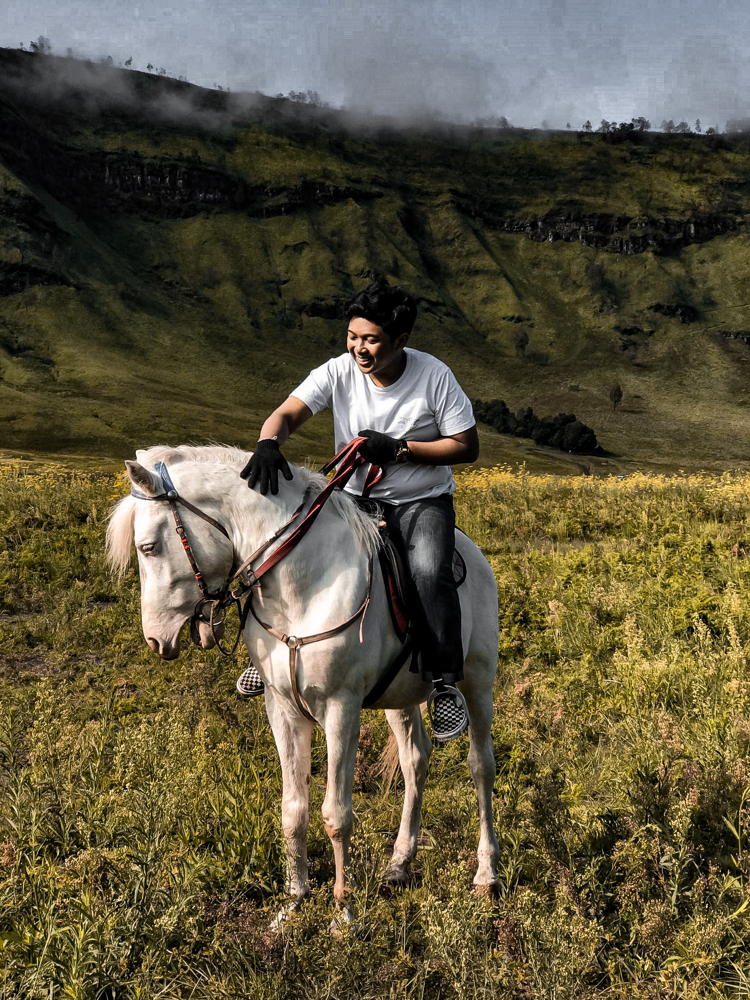

Holla!
Saya Bayu
Hai semua perkenalkan nama saya I Putu Bayu Eka Pratama, akrab dipanggil Bayu. Saya merupakan mahasiswa Ilmu Komputer Universitas Udayana. Saya mempunyai Hobi Traveling, Nongkrong dan Rebahan.
Untuk Portofolio dan Sosial media saya bisa di cek bawah ini